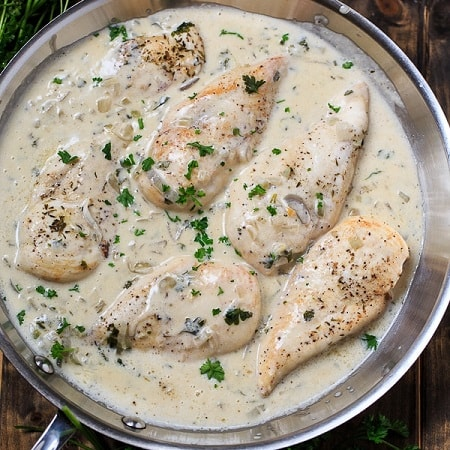

Chawla's Ludhiana Chicken

Chawla's Ludhiana Chicken
Christmas 2021 is officially over and I had the pleasure of being gifted Tiffin, a cookbook written by Sonal Ved. Sonal is the content director at India Food Network, Tastemade India, and the food editor at Vogue India. The cookbook is broken up into sections based on Indian regions, with recipe originating from Northern India.
This recipe was so simple, but packed with flavor. You will have to make a few homemade pastes, but it is so worth the extra time. I highly recommend a Nutri or Magic Bullet, so you can physically shake it to help the paste-creating process. Don't waste anymore time reading this, dive into these amazing flavors!
Ingredients:
- 1 lb bone-in chicken piece: skinless chicken thighs worked great
- 1/2 medium onion
- 1 lemon
- 1 tbsp ghee
- 1 tsp caraway seeds
- 3 tbsp onion paste
- 2 bay leaves
- 1 tbsp ginger-garlic paste
- 1 tbsp dried fenugreek leaves
- 1 cup cashews
- 1 cup yogurt [do not use Greek yogurt]
- salt & pepper to taste
Directions:
- In a metal bowl, mix lemon juice with salt. Toss chicken pieces in bowl and marinate for 4-24 hours.
- Preheat oven to 400°F and bake chicken for 20 minutes.
- While chicken is baking, combine cashews and fenugreek in blender with a small amount of water. Blend until smooth.
- Heat saute pan over medium heat and melt ghee.
- Once hot, saute caraway seeds until you hear them crackle. Next, saute onion paste, garlic-ginger paste, and bay leaves, until brown
- Add cashew paste and saute a bit longer.
- Add chicken and yogurt. Cook until all the water has evaporated. Season with salt and pepper and enjoy!
Adapted from Tiffin.